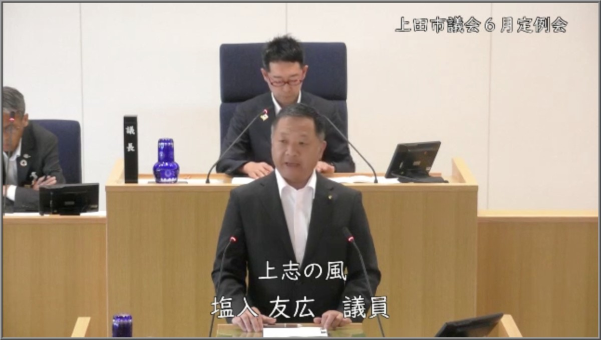
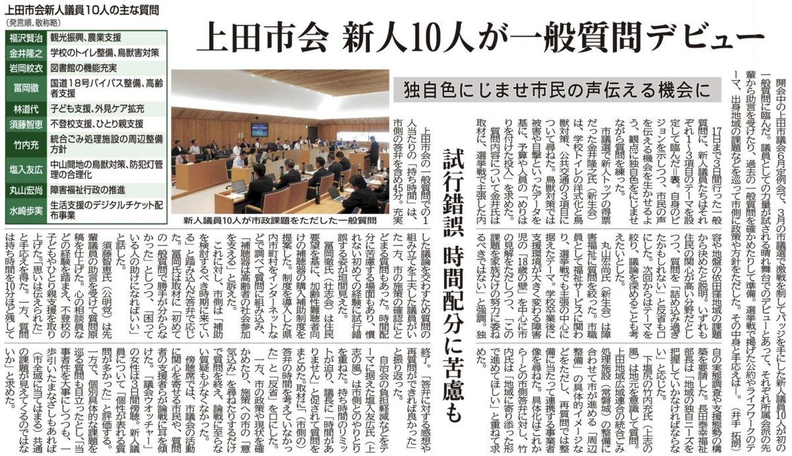

塩入友広です。日頃より温かいご支援をいただき、心より御礼申し上げます。
上田市議会では毎年6月、9月、12月、3月の年4回、定例会が開催されます。先日閉会いたしました6月定例会は、私にとって初めて臨む定例会となりました。議会は時期ごとにその役割や機能が異なり、特にこの6月定例会においては、補正予算の審議が主要な議題となることを、実践を通じて学びました。
今回は、初めての一般質問で取り上げた2つの主要テーマについて、その要約をご報告いたします。下記の画像より動画をご覧いただくこともできますので、併せてご活用いただければと思います。

緊縮財政下における「仕組みの合理化と再設計」を提言
自治会の役員の方々や市の職員、地域の活性化に関わる全ての方の負担を減らすための「仕組みの合理化と再設計」は、たとえ緊縮財政下であっても優先されるべき未来への投資です。私は前職である工作機械メーカーでの電気制御設計の経験（無駄のない合理的な設計思想）を本市の将来を見据えた投資と持続可能な自治体経営に生かすべく、大きく2つの大項目について質問を行いました。
1. 中山間地域の持続可能な維持管理と野生鳥獣・河川対策
ニホンジカによる深刻な農作物被害に対し、これまでの「結果への支出」（捕獲報奨金：一頭あたり15,000円、令和6年度実績で2,442万円）から、河川を含む侵入ルートの徹底的な遮断という「原因への投資」へ移行し、中長期的な財政負担を適正管理していくべきだと市長へ見解を質しました。
市長からは、単に捕獲に依存するのではなく、侵入経路の遮断や生息環境の管理といった防除対策を一層強化し、長期的には捕獲依存型の支出構造の適正化を図るという方針が示されました。また、鹿の侵入ルートとも重なり、住民の高齢化や若手の域外流出により維持管理が困難となっている河川の問題については、市が当事者となって長野県（河川管理者）へ強く働きかけ、計画的かつ予防保全型の維持管理を進める協力を求め、市側の主導的な姿勢を確認しました。
2. 防犯灯の維持管理合理化と通学路の安全確保
市内1万6,000基を超える防犯灯の電気料金補助申請が、自治会と市双方の多大な事務負担を生んでいる現状を指摘し、事務軽減に向けた抜本的な運用見直しを求めました。
市側からは、即時の事務一括化には名義変更等の課題があるものの、さらなる手続簡素化に向けて検討を進める旨の答弁を得ました。
さらに、保護者による自家用車送迎の常態化が周辺の交通リスクや子育て世代の負担増を招いている現状を踏まえ、都市計画と連動した安全な通学手段の構築を求めました。
教育長からは、これから策定する「小中学校整備基本計画」において通学距離や手段を重要事項として検討し、庁内および関係機関と連携して安全確保を最優先に対応していく方針が示されました。

6月19日付 信濃毎日新聞（東信版）一般質問の持ち時間は答弁を含めて45分間です。概ね、質問１に対し答弁２の時間配分である旨を先輩議員から聞いており、質問の文字数を4,500文字から5,000文字に設定し、残時間を示すモニターを確認しながら慎重に臨みました。
しかし、最終盤の質問において残り時間に余裕があると誤認してしまい、発言の速度を落としてしまったことで、市側の答弁時間を圧迫する事態を招きました。結果として議長から進行を促される形となり、この一連の経過は信濃毎日新聞にも報道されることとなってしまいました。時間配分の計算において、「残り時間から必要な答弁時間（約5分）を差し引く」という視点を欠いていたことが根本的な原因です。
この経験を厳しく受け止め、市民の皆さまの声を一言も無駄にせず、より確実で密度の高い論戦を展開できるよう、さらなる研鑽を積んでまいります。
今日も最後までお読みいただき、ありがとうございました！
過去の記事は、こちら（しおいり通信のトップページ）からお読みいただけます。
塩入友広 TEL 090-3558-5540